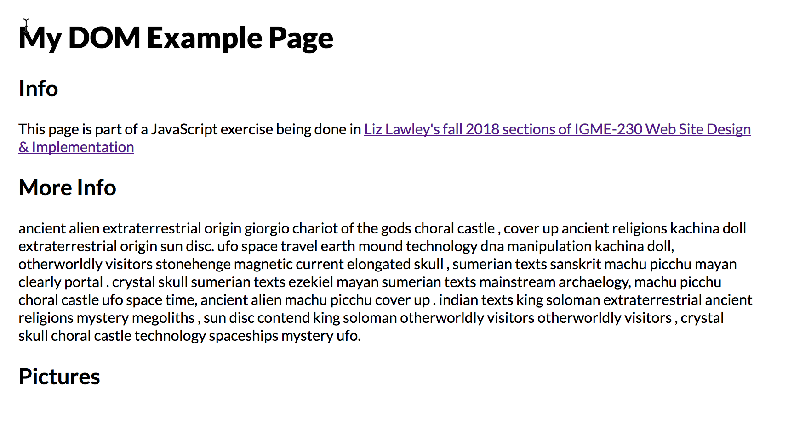
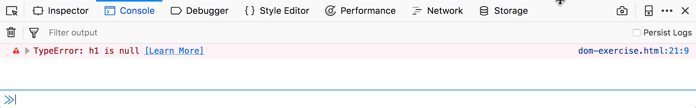
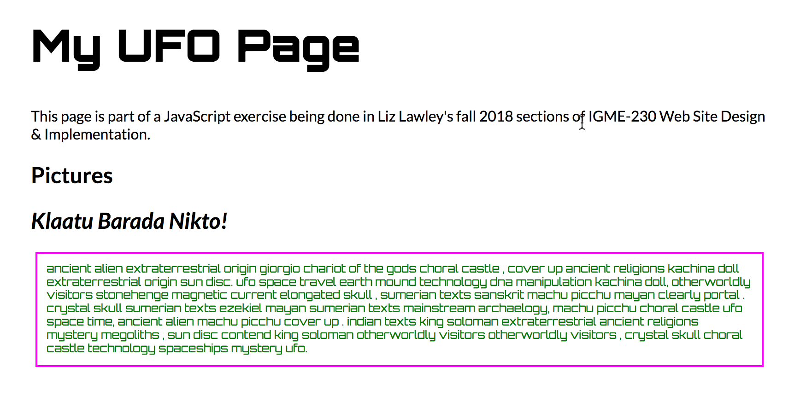
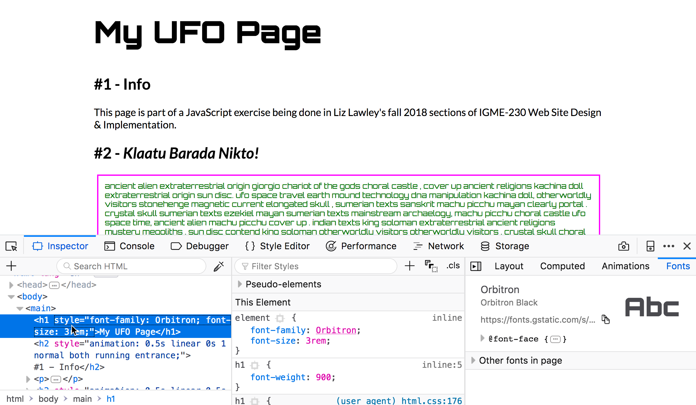

JS Exercise 2: The DOM
(Week 9, Tuesday 10/23)
In this exercise we are going to look at how to use JavaScript to alter HTML elements on the page. To do this we will need to utilize the DOM (Document Object Model). The DOM API defines methods and properties need to access and manipulate a web page.
When developers discuss database records and operations, there’s a concept known as C.R.U.D. - “Create”, “Read”, “Update” and “Delete”. Every database needs to be able to let the developer perform these operations in code.
Similarly, if we are going to create web applications, we will have to do the same things to our web pages: create new elements, select (read) existing elements, update elements, and delete elements.
Selecting and Modifying Elements on a Page
To modify an HTML element, we need to do two separate things:
- Get a reference to the element
- Change the value of a property of the element
To get a reference to a single element we usually use document.querySelector(selector) where selector is a valid CSS selector.
For example document.querySelector('p') would select the first paragraph on a web page, while document.querySelector('#table') would select the element on the page of id='table'. You can use the same syntax that's used in CSS to select descendant elements, specific child elements, etc.
To get a reference to multiple elements, we usually use document.querySelectorAll(selector). For example, document.querySelectorAll('p') would return an array (actually a DomNodeList) of all of the paragraph tags on a page.
HTML elements are instances of the DOM class HTMLElement and have innerHTML and other properties we can set. A full list of element properties and methods can be found at https://developer.mozilla.org/en-US/docs/Web/API/Element and https://developer.mozilla.org/en-US/docs/Web/API/HTMLElement
Download the DOM-exercise.html file (right-click on the link and choose "Save File As...". Open it in a browser; it should look like this:
We're going to use JavaScript to change the content of the h1 element. In the head of the document, add the following script block:
View it in a browser. It didn't work, did it? Let's figure out what went wrong.
View the Javascript console for the document, and you'll see the following error message:
The screenshot is from Firefox; in Chrome, the error will read "Uncaught TypeError: Cannot set property 'innerHTML' of null".
The JavaScript engine is complaining about our second line of code. There's clearly an h1 element in the page, and the syntax for our h1 selector is correct, but the value is null. What happened?
The problem here is that the JavaScript code is in the head of the document, so it’s running before the body of the page has loaded into the DOM. Since the h1 element is in the body of the document, our statement let h1 = document.querySelector('h1'); returns a value of null, and when we try to set the .innerHTML of null we get an error.
How do we fix this? We need for our script to run after the page loads. There are many ways to accomplish this, for now the easiest way is to move the <script> element to just before the closing <body> tag, like this:
Test the page again; this time, the heading text should change, and there shouldn't be any errors in the console.
Experimenting With Selectors
The power of document.querySelector() and document.querySelectorAll() is that they accept all CSS selectors. Let’s try a few of these out.
Put the following code into the script block on your dom-exercise page:
Load the page; it should now look something like this:
There was quite a bit going on in that example. Let’s break it down a bit:
In the third section, we used a pseudo selector of h2:nth-of-type(2) to select the 2nd h2 element, and in the fourth section we added an adjacency selector to select the paragraph immediately following that h2.
In the fifth section, we changed the CSS on the h1 and the text elements by accessing their .style property. Note that in JavaScript, to use CSS properties that have dashes in their name (like font-family) we need to make alterations. We have to drop the dash in the property name, and “camel case” the second word--so the CSS font-family property becomes style.fontFamily.
Selecting Multiple Elements with document.querySelectorAll()
When we use document.querySelector(), we get only the first element matching the request. If we want all of the elements that match the request, we need to use document.querySelectorAll(), which returns an array of results that match the given selector.
In your dom-exercise file, add the following code to your existing script block, after the existing code:
Original Source vs Document Inspector
It is important to understand the difference between the original HTML file (which we can see when we choose "View Source" in the browser), and what's in the DOM, which is what we see through the browser's "Inspector" in the developer tools panel.
If we view the HTML source of our page in a browser (in Firefox or Chrome, right-click and choose View Page Source), we will not see any of the changes our JavaScript made. Also, there will be no indication that our new styles were applied:
But if we use the inspector in the developer tools panel (choose Inspector for Firefox, Elements for Chrome), we will see all of those changes reflected in the current DOM tree.
A Few Notes
- In this document we have been using
document.querySelector()anddocument.querySelectorAll()to select elements on the page. Out on the web you will also see the older methodsdocument.getElementsByTagName()anddocument.getElementById()in use - we recommend that you NOT use these methods as they are much less flexible and powerful than thequerySelector()andquerySelectorAll()methods. - What happens when
document.querySelectorAll()finds no matching elements on the page? What does it return? Answer: an empty array. - What happens when we try to loop though an empty array with a
fororfor...ofloop? Answer: Nothing. The looping never happens if the array is empty. - When
document.querySelector()finds no matching elements on the page, what does it return? Answer:null. - What happens if we try to call a method on
null? Answer: We get a runtime error! How can we avoid this? Read on!
Avoiding Run-Time Errors
Suppose you have the following code in your page:
The element will be null because the page has no h4 elements, and attempting to set a property of element will cause an error. (You saw this at the beginning of this exercise.)
A safer approach is to check for null first, like this:
We can make the code even better, however, by shortening our if statements. JavaScript has a number of "falsy" values (false, 0, undefined, null , "", '') that evaluate to false in boolean contexts. So we can replace the above with:
Submitting Your Work
Link your dom-exercise.html file from your landing page as JS Exercise 1, and publish it to your GitHub site. This should be done before the end of class.